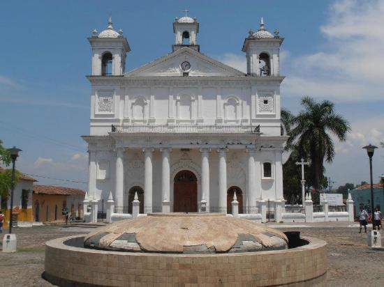
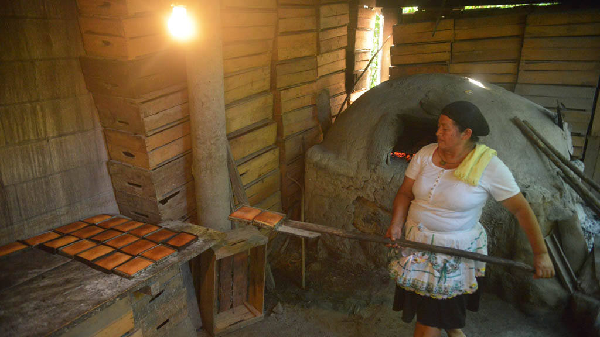

Cuscatlán es uno de los catorce departamentos que conforman la República de El Salvador. El departamento fue constituido el 27 de mayo de 1834. Se encuentra situado en la región central del país y limita al N y NE con el departamento de Chalatenango, al E con Cabañas, al SE con San Vicente, al S con el Lago de Ilopango y el departamento de La Paz y, por último, al O con el departamento de San Salvador. En el N el valle del río Lempa origina una región plana y fértil, apropiada para la actividad agrícola. El centro y sur del departamento, en cambio, son más montañosos. El departamento comprende una superficie de 756 km² y tiene una población estimada de 216.446 habitantes (2007).
Su cabecera fue originalmente Suchitoto, pero a partir del 12 de noviembre de 1861 es la ciudad de Cojutepeque. Constó de los distritos o partidos de Cojutepeque y Suchitoto, creados respectivamente en 1786 y por Ley de 22 de mayo de 1835.
El municipio de Cojutepeque en el año 2011 tenía una población algo superior a los 55.000 habitantes (octava del país) y su superficie es de 31,43 km2. Es una ciudad con una rica vida comercial, centro de intercambio de una amplia zona
Se encuentra a 34 km al oriente de San Salvador, a 1003 msnm en las faldas del Cerro de las Pavas, tesoro natural. Su clima es fresco. Anteriormente, cuando las calles eran empedradas y había una adecuada filtración de agua hacia el subsuelo, por las tardes y noches solía formarse una densa capa de niebla, por lo que era conocida poéticamente como "La Ciudad de las Neblinas". El nombre emblemático aún persiste, aunque ahora sólo eventualmente se cubre de neblina.
En Cojutepeque encontrará varios platillos típicos, pero los más conocidos son sus embutidos (chorizos, butifarras y salchichones), que acostumbran a vender mujeres al paso de los autobuses interurbanos que transitan por la Carretera Panamericana. Los chorizos de Cojutepeque son bien conocidos en todo el país: de hecho, es posible comprarles en muchas ciudades de El Salvador, y no solamente en Cojutepeque. Los chorizos son hechos de carne de cerdo, carne de res, sal, especias y herbas, achiote, sal de cura, y otros preservantes.
Candelaria, Cojutepeque y San Ramón son municipios de Cuscatlán, en donde el turismo está en auge. Los visitantes pueden apreciar aspectos religiosos, conocer sobre la elaboración de productos artesanales como canastos y puros. También pueden degustar deliciosos marquesotes y otros platillos que preparan en esas localidades.
